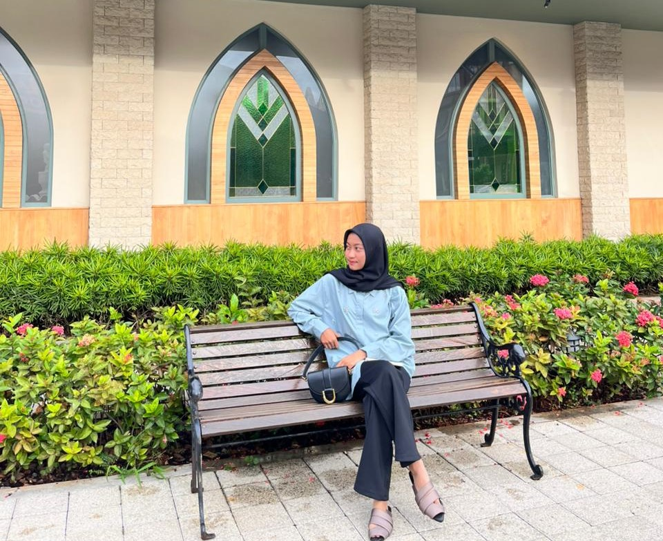
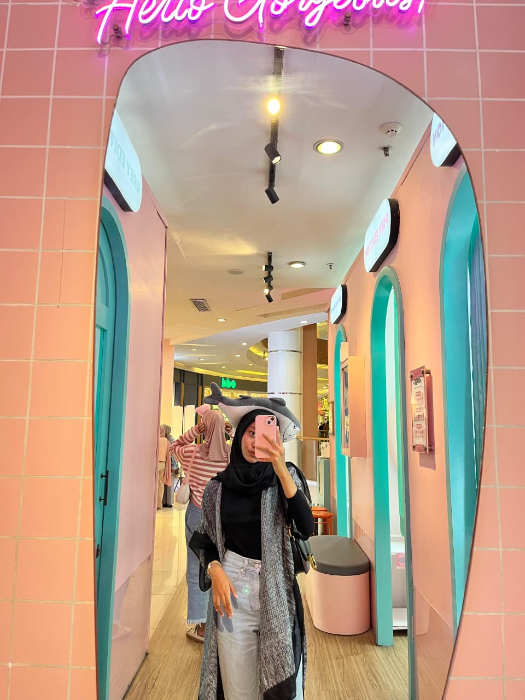

Muthia Meilani Ayudia Putri
I'm Information Systems Student
About
Halo, saya Muthia Meilani Ayudia Putri, mahasiswa Sistem Informasi di Universitas Muhammadiyah Bengkulu. Saya tertarik pada pemamfaatan teknologi informasi, pengelelolaan sistem, dan penyusunan informasi yang rapi serta terstruktur untuk membantu menyelesaikan berbagai kebutuhan secara efektif.

Mahasiswa Sistem Informasi & Pengembangan Web Pemula.
Terbiasa bekerja terstruktur, cepat beradaptasi dengan materi baru, dan antusias mengembangkan keterampilan di bidang teknologi informasi, jaringan dasar, serta pengembangan web.
- Birthday: 22 May 2008
- Instagram: @meilanii.a
- Phone: +6285788400751
- City: Bengkulu, Pagar Dewa
- Age: 18
- Degree: S1 (Mahasiswa)
- Email: mmap24825@gmail.com
- Student: Student
Sejak masa sekolah hingga perkuliahan, saya terbiasa terlibat dalam kegiatan organisasi, kepanitiaan, serta tugas kolaboratif yang melatih ketelitian, administrasi, dan kerja sama tim. Melalui website profil ini, saya mendokumentasikan proses belajar, keahlian, dan perjalanan akademik saya di bidang Sistem Informasi.
Semester Kuliah Sistem Informasi, UMB
Kegiatan: Panitia Organisasi: Acara Sekolah
Semangat Belajar Terus Berkembang di Sistem Informasi
Keahlian Utama Web Dasar, Office, Administrasi
Skills
Keahlian teknis dan pendukung yang saya kembangkan sejak masa sekolah hingga kuliah Sistem Informasi.
Resume
Ringkasan perjalanan pendidikan, pengalaman oraganisasi dan kepanitiaan, serta pengembangan diri saya dari masa sekolah hingga perkuliahan Sistem Informasi.
Summary & Education
Muthia Meilani Ayudia Putri
Mahasiswa Sistem Informasi di Universitas Muhammadiyah Bengkulu yang terbiasa bekerja rapi, berkoordinasi dalam organisasi dan kepanitiaan, serta antusia mempelajari teknologi informasi dan pengembangan web.
- Pagar Dewa, Bengkulu, Indonesia
- +6285788400751
- mmap24825@gmail.com
Education
S1 SISTEM INFORMASI (MAHASISWA)
2026 - Sekarang
Universitas Muhammadiyah Bengkulu, Indonesia
Mahasiswa semester 1 kelas 1.1 (NPM: 2657201055) di Fakultas Teknik dengan fokus pembelajaran pada konsep sistem informsi, dasar jaringan komputer, manajemen, dan pengembangan web dasar.
PENDIDIKAN MENENGAH ATAS (SMA)
2023 - 2026
SMA IT AL HASANAH Bengkulu, Indonesia
Menyelesaikan pendidikan menengah atas sambil aktif dalam kegiatan otganisasi, administrasi, dan kepanitiaan sekolah.
Organization & Committee Experience
PENGURUS ORGANISASI & KEPANITIAAN SEKOLAH
2024 - 2026
Organisasi & Kepanitiaan Kegiatan
- Menangani administrasi, persuratan, pencatatan rapat, serta pengarsipan dokumen oragnisasi secara tertib.
- Berperan sebagai penanggung jawab (PJ) acara pada kegiatan Akkasiah serta acara pada peringatan 17 Agustus gabungan sekolah.
- Merancang alur kegiatan, memantau pelaksanaan acara agar berjalan lancar, serta berkoordinasi dengan anggota tim.
- Terlibat dalam kerja kelompok dan aktivitas organisasi kampus untuk melatih komunikasi, ketelitian, dan manajemen waktu.
KEROHANIAN & SEKRETARIS OSI
2024 - 2026
Organisasi Siswa Intra Sekolah (OSIS) - SMA IT AL HASANAH Bengkulu
- Merencanakan kegiatan di bulan ramadhan seperti berbagi makanan dan berbuka puasa bersama.
- Menyiapkan kebutuhan teknis, alur acara, dan administrasi pendukung kegiatan kerohanian.
- Menangani administrasi kesekretariatan, persuratan, dan dokumentasi kegiatan oraganisasi.
- Mencatat hasil rapat, menyusun agenda kegiatan, serta mengelola pengarsipan dokumen organisasi.
Portfolio
Ruang kecil untuk menyimpan cerita mulai dari perjalanan alam, kenangan masa SMA, kegiatan organisasi, sampai proses belajar di dunia perkuliahan.
- Semua
- Saya
- SMA
- Organisasi
- Perkuliahan


Skills & Fokus Area
Gambaran bidang keahlian, kemampuan administrasi dan organisasi, serta fokus pembelajaran yang terus saya kembangkan di bangku kuliah.
Administrasi & Kesekretariatan
Terbiasa menyusun notulensi, arsip surat-menyurat, dan pengelolaan data kegiatan selama menjabat sebagai sekretaris OSIS.
Manajemen & Organisasi
Mampu berkoordinasi dalam tim, merencanakan agenda kegiatan, serta mendukung kelancaran program kerja organisasi.
Sistem Informasi & Data
Mempelajari alur informasi, struktur organisasi berbasis sistem, dan pengorganisasian data pada mata kuliah Sistem Informasi.
Jaringan Komputer Dasar
Memahami konsep dasar jaringan seperti pengaturan pengalamatan IPv4 dan subnetting.
Desain Visual & Tata Letak
Mengembangkan tampilan visual yang rapi dan komunikatif untuk kebutuhan dokumen, identitas kelompok, maupun tata letak halaman web.
Riset & Penulisan Akademik
Terbiasa merangkum materi, menyusun catatan terstruktur, dan menuliskan referensi sumber bacaan secara tertib.
Contact
Silahkan hubungi saya melalui informasi kontak atau formulir pesan dibawah ini.
Address
Kota Bengkulu, Bengkulu, Indonesia.
Call Us
+62 857 8840 0751
Email Us
mmap24825@gmail.com